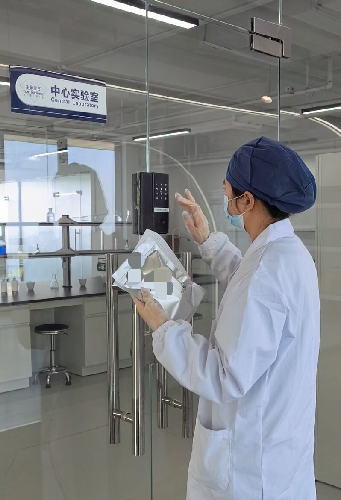
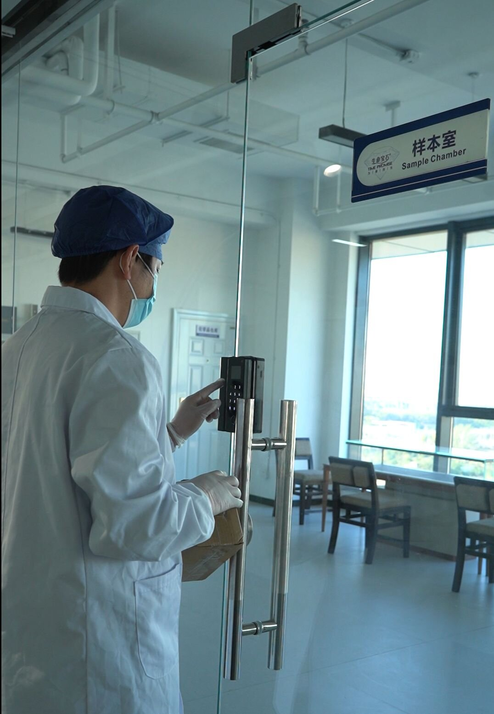

Quick Answer
Auditing a memorial diamond manufacturer means verifying one claim: that the company in front of you actually turns biological carbon into diamonds, in its own facility, under its own control. The verification is physical, not documentary. A real audit covers six areas — HPHT synthesis equipment, carbon extraction capability, sample custody and traceability, the quality system, legal substance, and commercial reality — and it cannot be passed with a showroom, a brochure, or a single polished stone. This article provides the on-site and remote checklist we believe every buyer should run before signing an OEM or white-label agreement, and lists the red flags that should end the conversation immediately.
| Area | What you verify | What fails |
|---|---|---|
| 1. HPHT synthesis | Working presses, maintenance logs, growth records | A showroom with one machine and no production logs |
| 2. Carbon extraction | Extraction lab throughput, purity verification to 99.95%+ | "We send samples to a partner lab" with no names |
| 3. Sample custody | Batch ID at intake, segregated processing, third-party traceability lookup | Samples that disappear into an unlogged back room |
| 4. Quality system | Grading records, remake policy in writing, dated production logs | Certificates shown for other companies' stones |
| 5. Legal substance | Business license, verifiable patent, export records | A patent number that does not exist in any registry |
| 6. Commercial reality | B2B-only model, ash-refusal policy, refusal to retail | A "manufacturer" that will happily sell you one retail ring |
Introduction: Why This Industry Attracts Impersonators
Memorial diamond manufacturing sits at an awkward intersection: high emotional value, low customer familiarity with the underlying technology, and a long production cycle that delays discovery of problems by months. Most buyers — pet crematorians evaluating a supplier, jewelry founders building a memorial line — have never seen an HPHT press in person. They have no baseline for what a real facility looks like.
That knowledge gap is exploitable, and it gets exploited. The market contains genuine manufacturers operating their own synthesis equipment, trading companies that outsource to unnamed third parties, and outright resellers who position a supplier relationship as ownership. From the outside, all three can present similarly convincing websites, certificates, and sample stones.
The cost of choosing wrong is not just financial. A partner who loses a customer's pet hair sample — irreplaceable material — faces damage no refund can repair. A partner who discovers at delivery that "certified" means something different than assumed faces a brand problem in the most review-sensitive market there is.
The audit exists to collapse this uncertainty. It is not adversarial; serious manufacturers expect and welcome it. What follows is the checklist framework we recommend to procurement teams evaluating any memorial diamond manufacturer — including us.
The Six Audit Areas
1. HPHT Synthesis Infrastructure
The core claim of a manufacturer is physical: diamond crystal growth under high pressure and high temperature — approximately 5.5 GPa and 1,450°C in our own process. The equipment that does this, a cubic or belt-style HPHT press, is a large industrial machine with supporting power, cooling, and hydraulic infrastructure. It cannot be carried in on audit day.
What to verify on site:
- Multiple operational presses. One machine is a demonstration; a production operation is a fleet. Count them, note the model variety, and observe whether they are running, warm, or clearly dormant. A press that has been sitting cold for months has a story attached to it.
- Maintenance logs. Every press has consumable components — anvils, heaters, insulation — that wear and are replaced on schedule. Ask to see the maintenance ledger. Real operations have boring, dated entries going back years.
- Growth records. Each production run generates records: assembly dates, chamber parameters, run duration, outcomes. These should be voluminous and referenceable. A growth log with three entries is a confession.
- Supporting infrastructure. Synthesis at scale consumes serious electrical power and cooling water. Follow the cables. A "factory" with domestic-grade electrical panels is not running the equipment in the room.
The key question
"Show me the growth log for the stone that was in the chamber last month." The speed and completeness of the answer tells you most of what you need to know.
For reference on what this equipment does, see our technology overview and the production cycle breakdown.
2. The Carbon Extraction and Purification Laboratory
Here is the industry's quiet moat. Turning hair, fur, or plant fiber into synthesis-ready graphite — purified to 99.95%+ carbon — is chemistry, not gemstone trading, and it is where most impersonators are exposed. A company can buy finished lab-grown diamonds wholesale and re-sell them. It cannot buy extracted biological carbon. Either the lab exists or the story collapses.
What to verify:
- Extraction equipment in-house. Furnaces, reaction vessels, filtration, analytical glassware — the apparatus of organic chemistry, in operational condition, with reagent stock and consumables to match. Our extraction process describes the stages a real lab must cover.
- Throughput consistency. Compare sample intake volume with extraction capacity. A facility claiming thousands of annual diamonds with one small furnace has an arithmetic problem.
- Purity verification method. Ask how purity is measured and how graphitization is confirmed before synthesis. The purity requirements for diamond synthesis are a useful cross-reference — a real lab answers these questions in its sleep.
- Patent evidence. A manufacturer with a genuine extraction method usually has intellectual property to show for it. At BioGem Lab, the extraction methodology is covered by Chinese invention patent ZL 201010565778.9 (certificate No. 1058820, granted 2012) — verifiable in the CNIPA public registry, not just on our word. See our patent documentation.

3. Sample Custody and Traceability
For a memorial diamond partner, this is the highest-stakes area. The material arriving at the factory is emotionally irreplaceable: a last clipping of a dog's fur, a child's first hair. An audit must establish that custody of that material is controlled from the moment the package opens.
What to verify:
- Batch ID at intake. Every sample should receive a unique identifier at the moment of receipt, before processing, logged against date, source, and partner. Ask to see the intake ledger and watch the process if possible.
- Segregated processing. Samples must never share processing lanes in a way that permits cross-contamination. Ask how segregation is maintained physically — separate vessels, separate runs, documented lane assignments.
- The random traceability drill. This is the single most revealing test in any memorial diamond audit: select a finished stone at random and ask to trace it backward — to its grading record, its growth batch, its extraction batch, its intake entry, and its original sample documentation. A genuine operation completes this chain in minutes from its records. An operation that cannot complete it, or completes it in hours of frantic phone calls, has told you something more valuable than any certificate.
- Third-party verification. Self-attested traceability is marketing. Real traceability runs through an independent body — at BioGem Lab, every diamond carries a unique traceability code verifiable through the CCIC national traceability platform and the ILDA third-party lookup, where production stage records are accessible by code. Our laboratory page documents the full system: unique batch IDs from intake, segregated lanes, ISO 8–ISO 6 production cleanrooms, and audit-trail logging.

4. The Quality System
Quality in this industry is not a feeling; it is a paperwork trail plus consistent physical output. The audit should test both.
What to verify:
- Written specification. Every legitimate manufacturer states its product standard in writing: color range, clarity range, cut standard. Ours is E–H color, VVS–SI clarity, Ideal cut as standard, with five optional shapes — stated identically across our site, our Partner Pack, and our quotations. If a manufacturer's specification shifts between documents, the specification does not exist.
- Remake policy. What happens when output misses specification? A real manufacturer answers without hesitation, in writing. Our policy: if a finished stone deviates by more than one color grade from the agreed specification, we remake at no charge. Any manufacturer unwilling to commit a remake policy to writing is pricing your risk into the relationship.
- Grading consistency. Ask to see grading records across multiple recent batches, not a curated best-of file. Natural variability exists in HPHT output — a manufacturer claiming zero variation is either filtering reality or filtering records.
- Sample verification. The display sample on the shelf proves nothing by itself. The evaluation sample structure on our partnership page — a stone produced under the actual workflow, with an evaluation window — is the meaningful test, which is why we operate one for qualified partners.
5. Legal and Compliance Substance
What to verify:
- Business registration. The legal entity on the contract must match the operating entity at the facility. Obtain the business license and confirm the registered address against the facility address.
- Patent verifiability. A patent number should resolve in the relevant public registry. For Chinese invention patents, the CNIPA database is searchable by number, and the registrant and inventor names should match the people you are dealing with. Treat unverifiable patent claims as negative evidence — inventing a patent number is not a gray area.
- Export compliance knowledge. A manufacturer shipping laboratory-grown diamonds internationally should state its export classification without research. Ours: finished lab-grown diamonds ship under HS 7104.90, exempt from export controls, with no Kimberley Process certificate required. Hesitation on basic customs questions predicts problems at the border.
- Facility reality. The registered address and the audited address should be the same building, and the building should contain the operation. This sounds obvious. It is not, and it is worth the hour it takes to confirm.
6. Commercial Reality
The final area is behavioral — what the company's commercial conduct reveals about its real position in the supply chain.
Signals of a genuine upstream manufacturer:
- B2B-only posture. A manufacturer serving white-label partners does not compete with them for end customers. If the "manufacturer" will happily sell retail customers a single stone under its own brand, it is not a manufacturer — or it is a manufacturer that will eventually be your competitor.
- The ash refusal. A company that accepts everything accepts anything. A manufacturer with real extraction standards declines sources that fail chemistry. We decline cremated ashes permanently — standard cremation volatilizes the organic carbon, and the residual material cannot support synthesis. A supplier who claims otherwise either does not understand the chemistry or does not perform the process. Either answer fails the audit. Our FAQ states the policy openly.
- Willingness to be audited. This is the master signal. Genuine facilities answer audit questions with records. Organizations with something to hide produce scheduling conflicts.
The Remote Audit Protocol
An on-site visit is not always practical — a partner in Toronto evaluating a facility in Luoyang faces real travel cost. A structured remote audit covers most of the same ground if the manufacturer cooperates fully. Request, at minimum:
- A recorded, timestamped video walkthrough of the full facility — synthesis floor, extraction laboratory, sample intake, grading area — in one continuous or minimally segmented recording. Timestamped continuity matters: a walkthrough assembled from months of disconnected clips proves only access to footage.
- Stage records for a recent production batch, from intake entry through grading, with dates. This is the remote version of the random traceability drill.
- Live video verification of specific equipment, if a live call is practical — ask the guide to open a press chamber, show the current growth assemblies, and read a serial number in real time. Specific, physical, unscriptable requests are the point.
- Document scans: business license, patent certificate, and a recent (last 90 days) shipping document with values redacted.
- An independent inspection agency for material commitments. For significant initial orders, a third-party inspection firm can verify facility existence, equipment inventory, and process claims on your behalf — a reasonable middle path between trusting documents and flying out yourself.
What a remote audit cannot establish — final confirmation of operational versus dormant equipment, and the atmosphere of a working floor — is exactly what a first pilot order exists to test. The operational end-to-end walkthrough of that first order is covered in our NDA-to-delivery analysis.
Six Red Flags That End the Conversation
- No extraction laboratory. Outsourced carbon extraction with unnamed partners is not manufacturing. It is intermediation, and the chain of custody — your customers' material — is only as strong as the weakest unnamed party in it.
- A patent number that does not resolve. Unverifiable IP claims are not marketing excess; they are fabrications, and they predict fabrications elsewhere.
- Retail willingness. A "manufacturer" enthusiastic about selling your end customers directly has told you its business model.
- No written remake policy. Refusal to commit quality remedies to writing means the remedies do not exist.
- Traceability that only the manufacturer can see. If verification requires trusting the same party you are auditing, you have audited nothing.
- Certificates from the wrong stones. Grading reports for stones the facility did not grow — sometimes purchased samples, sometimes photographs — presented as production output. Always match certificate dates, weights, and identifiers against production records.
What We Show Auditors at BioGem Lab
We publish this checklist fully aware of what it demands of us. For partners evaluating our facility — on site or remotely — this is what we provide:
- The synthesis floor. Our working HPHT press fleet, operating at approximately 5.5 GPa and 1,450°C, with maintenance logs and growth records available for inspection. The full process is documented on our manufacturing page.
- The extraction laboratory. Our in-house carbon extraction and purification operation, running the patented methodology (ZL 201010565778.9) to 99.95%+ purity — with patent documentation verifiable at CNIPA.
- The custody system. Sample intake with unique batch ID, segregated processing lanes, ISO 8–ISO 6 cleanroom production zones, and the CCIC / ILDA third-party traceability layer that any partner or end customer can query independently.
- The quality trail. Written specification (E–H, VVS–SI, Ideal), the one-grade remake commitment, and dated production records.
- The operational baseline. 60-day standard production cycle, no rush service under any circumstances, white-label delivery only, and the permanent ash policy stated where any customer can read it.
If you are evaluating memorial diamond manufacturers and want the documentation version of this article — certification samples, facility photography, process records — request our laboratory documentation through the partnership page or the contact form. We reply within 24 hours.
What Partners Ask Us About Factory Audits (FAQ)
Can a factory audit be done remotely?
Mostly, yes. A recorded continuous walkthrough with timestamps, stage records for a recent batch, and document scans cover the majority of verification ground. What remote auditing cannot confirm — whether equipment is operational versus dormant — is what a first trial order is for. For large initial commitments, an independent inspection agency is the standard middle path.
What documents should I request before any audit, remote or on-site?
Business license, patent certificate with a registry number you can verify independently (for Chinese patents, the CNIPA public database), certification accreditations, and a live demonstration of the traceability lookup — not a screenshot, a real-time query of a real code.
How do I verify a patent claim?
Search the issuing registry directly. Chinese invention patents resolve in the CNIPA database by number; the registrant entity and inventor names should match the people and company you are dealing with. A genuine patent takes minutes to verify. An unverifiable one is a fabricated one.
What is the single most revealing check during an audit?
The random traceability drill. Select a finished stone and ask to trace it backward through grading, growth, extraction, and intake records to its original sample documentation. A genuine manufacturer completes the chain from its own records in minutes. Anything else — the showroom, the certificates, the polished manners — is stagecraft.
How do I distinguish a manufacturer from a trading company?
Physical evidence chains, not presentations. A manufacturer shows you presses running, extraction throughput consistent with claimed volume, maintenance logs with years of dated entries, and sample custody records. A trading company shows you a conference room. If the evidence chain has a gap — especially around carbon extraction — assume the gap is the business model.
Should I hire a third-party inspection agency?
For material initial orders, it is a reasonable and common practice. Established inspection firms can verify facility existence, equipment inventory, staffing, and process claims. What they cannot do is judge gemological quality — that layer comes from the certification system (CCIC, IGI, GIA) and your own trial order evaluation.
What questions expose a broker fastest?
Ask for stage-specific documentation of a sample currently in production: the intake entry, the extraction batch record, the growth assembly photo with the batch ID visible, and the expected grading date. Then ask to see the maintenance log for the press that will grow it. Brokers answer these questions with proposals for another call.
Conclusion
A memorial diamond partnership places your brand between a grieving customer and a factory you may never visit. The audit is how you close that distance. Six areas, one drill, six red flags — the framework is not complicated, and genuine manufacturers pass it comfortably, because the things the audit checks are the things a real factory produces incidentally: logs, records, identifiers, and answers that arrive without preparation.
The manufacturers who resist auditing are telling you the most important fact in the evaluation. The ones who welcome it — who hand you the traceability terminal and say "pick any stone" — are showing you the standard you should hold everyone to, including us.
If you are evaluating memorial diamond manufacturers, we invite the comparison directly. Review our case documentation, verify our patent, run the traceability drill on our next open-house recording, and then start the conversation through our partnership page or the contact form. A related starting point: our guide to choosing a memorial diamond supplier.
Li Lihua — Chief Scientist
Patent inventor ZL 201010565778.9. View profile →
Audit Us First
Request a free OEM consultation — we reply within 24 hours. Run the six-area checklist against our facility, remotely or on site, before you sign anything with anyone.
Related Articles
How to Choose a Memorial Diamond Supplier
A B2B buyer's guide to evaluating memorial diamond manufacturers: certification, production capability, chain of custody, and the questions that separate factories from brokers.
NDA to Delivery: Inside a Memorial Diamond B2B Partnership
An end-to-end operational map of a memorial diamond B2B partnership — NDA, samples, HPHT production, white-label certification, and insured delivery.
Carbon Purity Requirements for Memorial Diamond Synthesis
Why 99.95%+ carbon purity is the non-negotiable threshold for HPHT memorial diamond synthesis — and how impurity levels affect growth, color, and clarity outcomes.